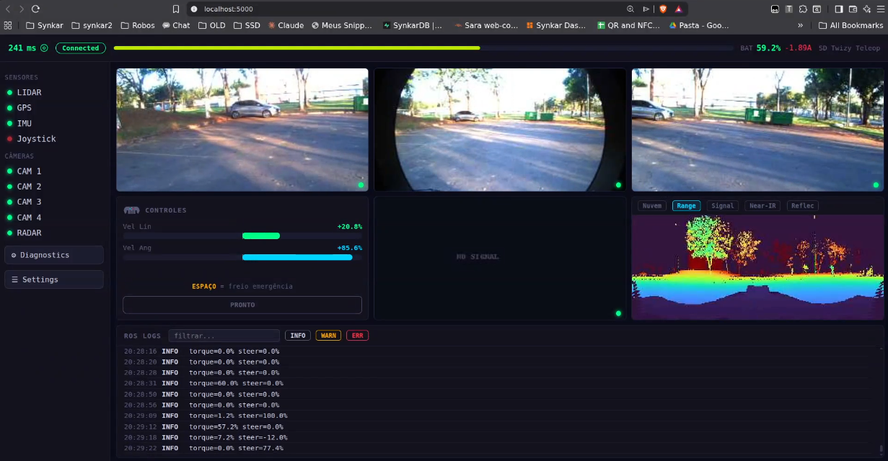

Dashboard Web de Teleoperação¶
Interface de navegador para dirigir e monitorar o Twizy remotamente: três câmeras frontais, visualizações do LiDAR e controle por teclado. É o caminho usado atualmente em campo, no lugar do controle Xbox descrito em Teleoperação Remota.
Acesso: http://localhost:5000 depois de subir a ponte.

Interface em operação real: as três câmeras frontais, a panorâmica Range do LiDAR e o log de comandos com os valores de torque e esterço efetivamente aplicados no veículo.
Por que existe uma ponte SSH¶
A arquitetura original enviava os tópicos ROS 2 diretamente pela VPN, usando o
Discovery Server. Isso deixou de entregar dados: os clientes
remotos descobrem os tópicos normalmente (ros2 topic list lista tudo), mas o pareamento de
endpoints não completa — o publicador do veículo reporta Subscription count: 0 mesmo com um
assinante remoto ativo, e nenhum dado de usuário trafega.
O diagnóstico descartou rede como causa: 0% de perda de pacotes, UDP nos dois sentidos até 8 KB, e os pacotes de descoberta chegando ao destino. Um assinante local dentro do veículo recebe os frames sem problema; qualquer assinante remoto não recebe. O comportamento afeta todas as máquinas de operador testadas.
Pista para a causa raiz: a whitelist de interfaces no veículo
O Fast DDS do veículo já foi deliberadamente restrito a uma única interface. O motivo original foi outro problema: ele subia em todas as interfaces de rede do carro e conflitava com as placas GigE das câmeras, impedindo a conexão delas. A correção da época foi isolá-lo na interface da VPN.
Restringir a interface do lado do operador já foi testado e não resolveu — só quebrou a descoberta. O que ainda não foi verificado é o perfil do lado do veículo: se ele anuncia apenas locators de uma interface específica, o pareamento com um assinante remoto pode não completar mesmo com a descoberta funcionando.
Outra suspeita registrada é o kernel do computador de bordo, que mudou de versão pouco antes de
o problema aparecer. Reiniciar discovery_server e depois os nós recupera a descoberta, mas
não os dados — o que aponta para algo abaixo da camada de descoberta.
Revise o XML do Fast DDS no veículo antes de considerar a ponte SSH definitiva.
A solução em uso transporta os dados por SSH (TCP, confiável) e mantém o DDS restrito a cada lado, onde ele funciona:
VEÍCULO SSH (sobre VPN) OPERADOR
──────────────────────────────────────────────────────────────────────────────
car_sensors.py (câmeras) ─┐
car_sensors.py (LiDAR) ─┴── frames ═══════════════════> pc_rx.py ─┐
│ DDS local
car_control.py <────────────── JSON <═══════════════ pc_tx.py <─────┴─ dashboard
│ (Flask :5000)
└─> /direct_control_cmd ─> SD-VehicleInterface ─> CAN
Dois pipes de sensores, não um
Os containers do veículo não trocam dados entre si por memória compartilhada (cada um tem seu
próprio /dev/shm). Por isso as câmeras são lidas de dentro de air_twizy_camera e o LiDAR de
dentro de ouster_lidar, em pipes separados.
Relays de redução no veículo¶
A banda da VPN não comporta os dados brutos: cada câmera sozinha exigiria cerca de 800 Mbps (2048×1536 bayer a 30 FPS) e a nuvem do Ouster cerca de 16 MB/s. Três relays rodam dentro dos containers do veículo, comprimindo antes de enviar. O regime estável observado fica na ordem de dezenas de KB/s no total.
| Relay | Container | Entrada | Saída |
|---|---|---|---|
cam_compress_relay.py |
air_twizy_camera |
/camera/top_{left,front,right}/image_raw (bayer 2048×1536) |
mesmos tópicos com sufixo /compressed — JPEG 320 px, q40, 10 fps, rotação 180° |
lidar_topdown_relay.py |
ouster_lidar |
/ouster/points (PointCloud2) |
/lidar/topdown — Float32MultiArray, até 300 pontos, 2,5 Hz |
lidar_img_relay.py |
ouster_lidar |
panorâmicas do Ouster | /ouster/<range\|signal\|nearir\|reflec>_image/compressed — JPEG 384 px, q30, 0,5 fps |
Os relays são temporários
São injetados via docker exec e não sobrevivem ao reinício ou recriação dos containers.
O script de inicialização sempre os reenvia. Integrá-los ao compose do veículo continua pendente.
Instalação na máquina do operador¶
A ponte não faz parte do repositório de hardware — são scripts que ficam na máquina de quem opera,
no diretório ~/twizy-ssh-bridge/ (peça a cópia a quem já opera; o conteúdo está versionado no
snapshot funcional do projeto).
Pré-requisitos:
| Requisito | Como verificar |
|---|---|
| Linux com Docker | docker --version |
| NetBird conectada à rede do projeto | netbird status e ping 100.122.121.134 |
| Acesso SSH ao veículo por chave, sem senha | ssh air@twizy deve entrar direto |
Imagem air-twizy-dashboard:latest no Docker local |
docker images \| grep air-twizy-dashboard |
A imagem é ros:humble-ros-base mais Flask, Pillow e o pacote sd_msgs compilado — é ela que
fornece a mensagem DirectControl e o ambiente ROS 2 dos dois lados da ponte.
Arquivos do diretório:
| Arquivo | Onde roda | Função |
|---|---|---|
start.sh / stop.sh |
operador | sobem e derrubam tudo |
car_sensors.py |
veículo (air_twizy_camera e ouster_lidar) |
lê os tópicos e escreve os frames no stdout |
car_control.py |
veículo (twizy) |
lê JSON do stdin e publica /direct_control_cmd |
pc_rx.py |
operador (container twizy_bridge) |
recebe os frames e republica no DDS local |
pc_tx.py |
operador (container twizy_bridge) |
assina o comando local e envia ao veículo |
Os scripts do lado do veículo são enviados a cada execução do start.sh, então não é preciso
instalá-los lá — e é por isso que a ponte se recupera sozinha depois de um reinício de container.
O que esperar no terminal: o start.sh imprime a sequência de etapas (relays, envio dos
scripts, container da ponte, dois pipes de sensores, pipe de controle, dashboard) e termina com o
endereço http://localhost:5000. Os logs dos pipes ficam em rx.log, rx_lidar.log e tx.log
no próprio diretório; um contador de frames crescendo neles indica que os dados estão fluindo.
Como subir¶
O script cuida de tudo na ordem: garante os relays no veículo, envia os scripts da ponte, sobe o container intermediário, abre os pipes SSH e inicia o dashboard.
Para derrubar:
Controles¶
Clique na página primeiro — o teclado só responde com a aba em foco.
| Tecla | Ação |
|---|---|
| W / S | acelerar / frear |
| A / D | virar à esquerda / direita |
| Espaço | freio de emergência (torque negativo, não inércia) |
| I / O | aumenta / diminui o teto de aceleração |
| K / L | aumenta / diminui o teto do volante |
Painel de ajustes¶
O botão AJUSTES, no card de controles, abre os parâmetros de condução. Todos valem imediatamente, sem reiniciar nada, e o botão de restaurar volta aos padrões.
| Parâmetro | Padrão | Significado |
|---|---|---|
| Acelerador: arranque | 5% | valor aplicado no instante em que W é pressionado (vence a zona morta) |
| Acelerador: máximo | 40% | teto do torque |
| Acelerador: rampa | 40 %/s | quão rápido sobe do arranque até o teto |
| Freio: arranque / máximo | 10% / 100% | equivalentes para S |
| Freio: rampa | 400 %/s | |
| Desaceleração (solto) | 100 %/s | queda do torque com nenhuma tecla pressionada |
| Freio de emergência | 100% | intensidade aplicada pelo Espaço |
| Volante: máximo | 100% | teto do esterço |
| Volante: rampa / retorno | 80 / 80 %/s | velocidade de virar e de voltar ao centro |
O que a interface mostra¶
- Três câmeras frontais (esquerda, centro, direita), a cerca de 4,5 quadros por segundo.
- Top view do LiDAR em abas: Nuvem (vista superior) e as panorâmicas 360° Range, Signal, Near-IR e Reflec.
- Barras de torque e esterço, estado dos sensores e log do ROS.
Solução de problemas¶
| Sintoma | Causa provável |
|---|---|
| Tudo em "NO SIGNAL" | Veículo desligado, VPN caída ou relays parados — rode start.sh de novo |
| Controle não responde | A aba do navegador está sem foco; clique na página |
| Interface com aparência antiga | Cache do navegador; recarregue com Ctrl+Shift+R |
| LiDAR sem publicar após ligar o carro | Corrida de inicialização do driver Ouster: docker restart ouster_lidar |
| Imagens travando | Banda da VPN saturada — normal quando o enlace P2P degrada |
Segurança¶
O controle é real. Com o veículo armado e em Drive, W acelera de verdade. Leia
Segurança na Operação antes do primeiro teste — inclui o procedimento de
retomada de controle, o checklist pré-operação e o encerramento seguro. Opere sempre com um
piloto de segurança a bordo. Nunca envie comandos de aceleração por scripts ou curl para
testar a cadeia — valide sempre por leitura (ros2 topic echo /direct_control_cmd).
Lembre-se de que o veículo não se move com a marcha em Park ou Neutral: o software não comanda a marcha, ela precisa ser selecionada fisicamente. Veja Operação do Veículo.